— Le lendemain —
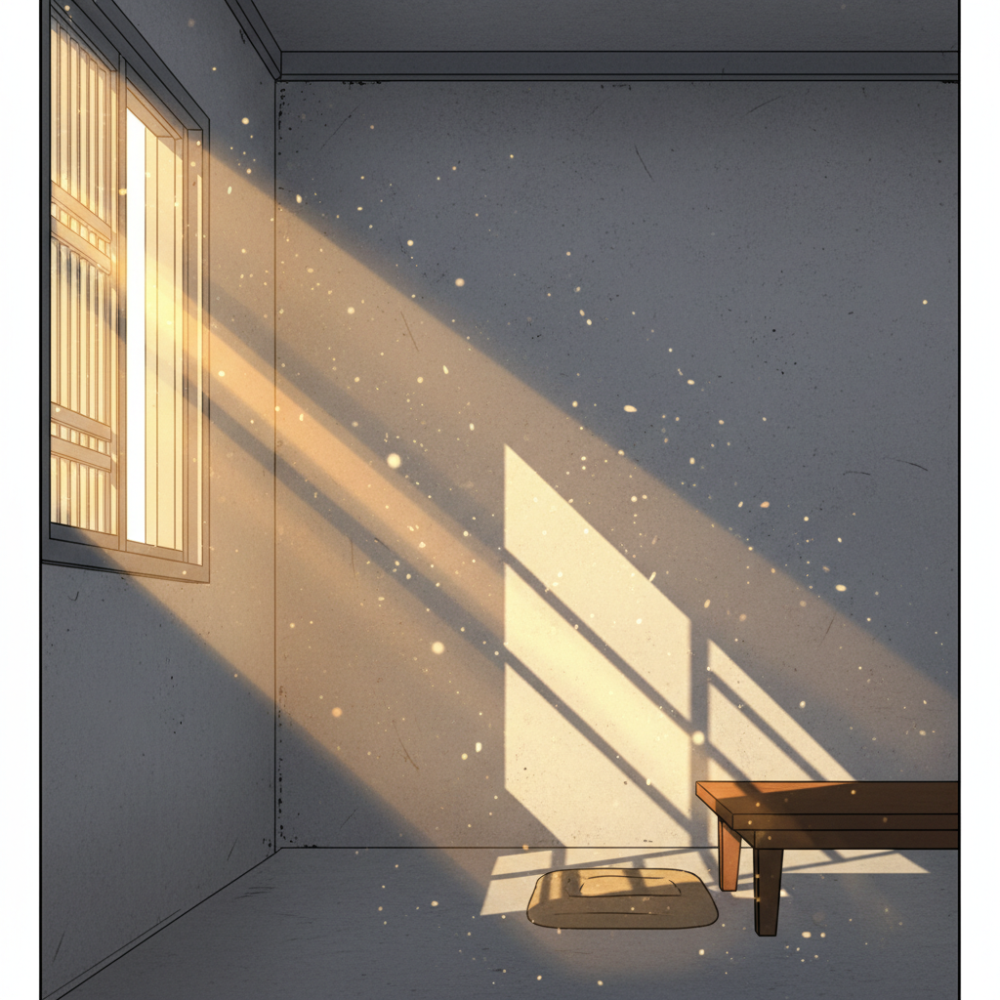
"Je me suis réveillée dans un endroit inconnu. Pendant une seconde, j'ai cru que tout allait bien. Juste une seconde."
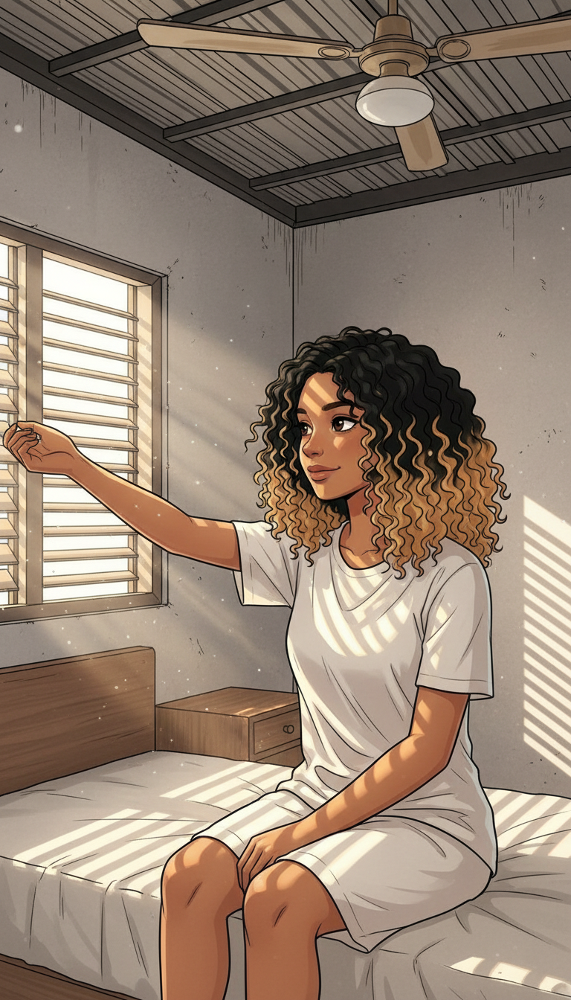
"Un vrai lit. Mon corps ne savait plus comment tenir debout sans souffrir. La fatigue de plusieurs jours en même temps."
Elles ont été si gentilles... Je dois leur faire confiance.
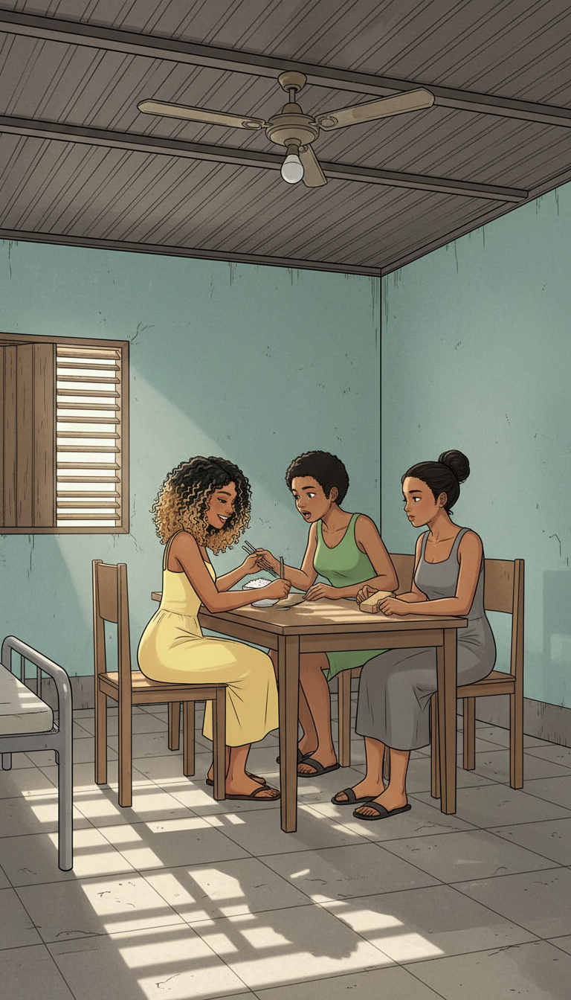
"Elles m'ont donné à manger, souri, demandé comment j'allais. Tout semblait normal."
Bien dormi ? Tiens, mange.
Merci... Vous êtes vraiment gentilles avec moi.
CLIC CLIC
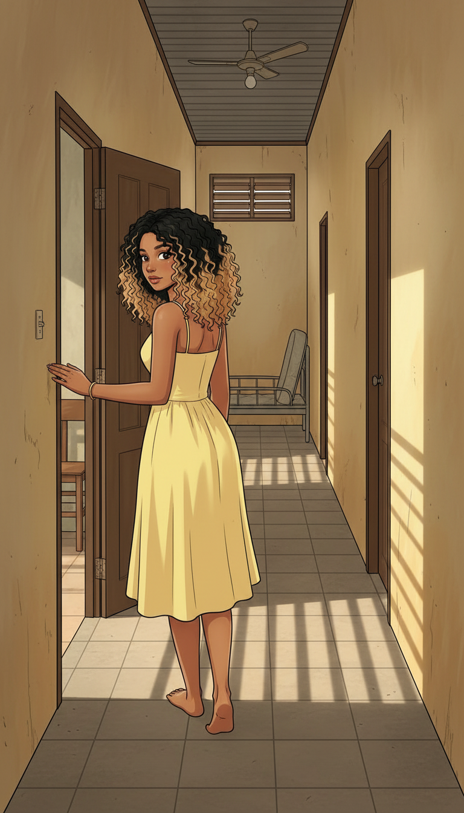
"La maison était modeste. Je commençais à me projeter — peut-être que j'avais eu de la chance, finalement."
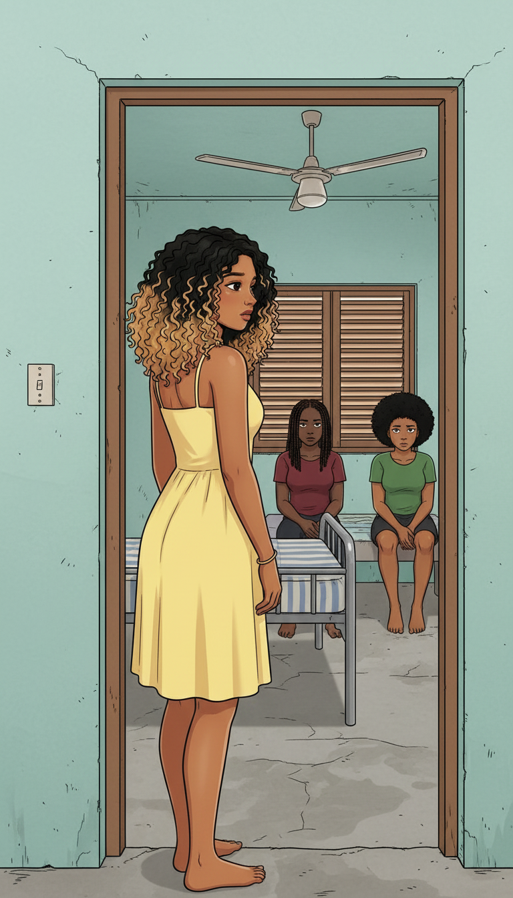
"Mais parfois, j'entrais dans une pièce et les conversations s'arrêtaient net. Un silence pesant que je ne savais pas interpréter."
Elles parlent de quoi, quand je ne suis pas là ?
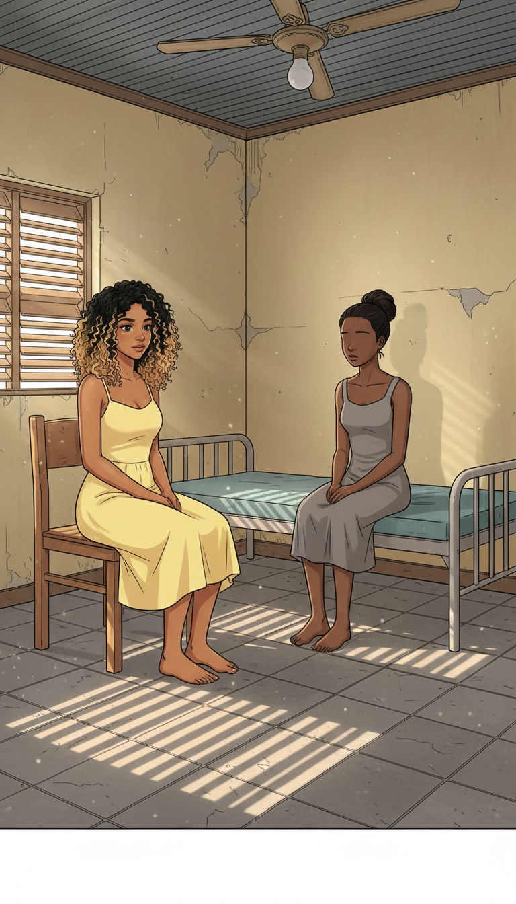
"Il y avait une fille qui ne parlait jamais. Son regard était vide, comme absent. Comme si son corps était là, mais elle, non."
Pourquoi elle a ce regard-là ? Qu'est-ce qui lui est arrivé ici ?
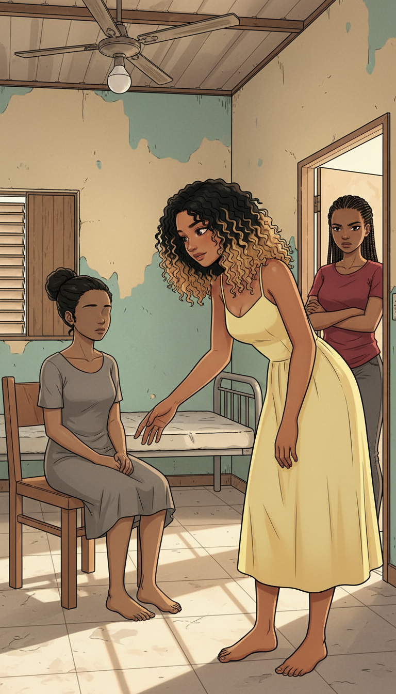
Hey... Tu vas bien ? Comment tu t'appelles ?
...
Laisse-la tranquille. Elle est fatiguée.
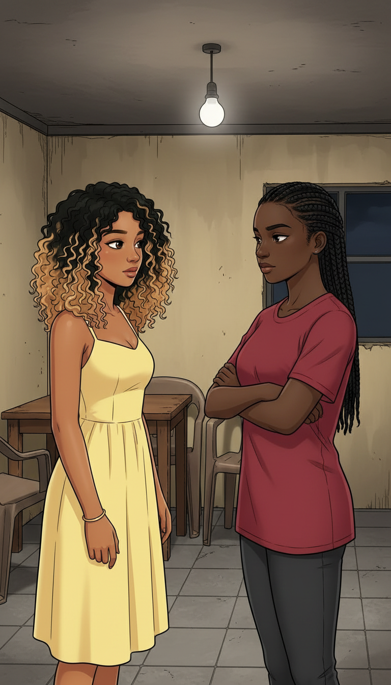
"Le soir, la meneuse m'a expliqué les 'règles'. Elle souriait encore. Mais plus tout à fait de la même façon."
Ici, on s'entraide. En échange de l'hébergement, il faudra que tu participes.
Participer ? Comment ?
T'inquiète pas. On t'expliquera.
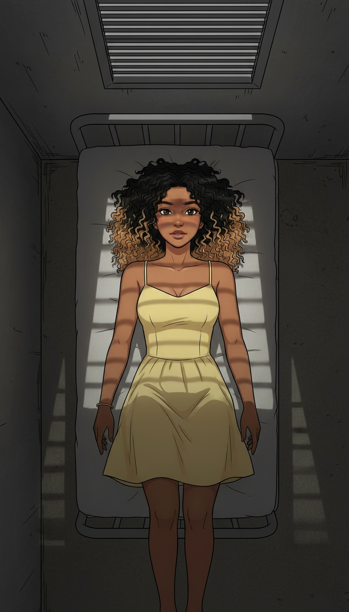
"Cette nuit-là, je n'ai pas dormi. Le mot 'participer' tournait dans ma tête sans trouver de sens."
Participer... ce qu'elle voulait dire... non, c'est impossible...
— Minuit —
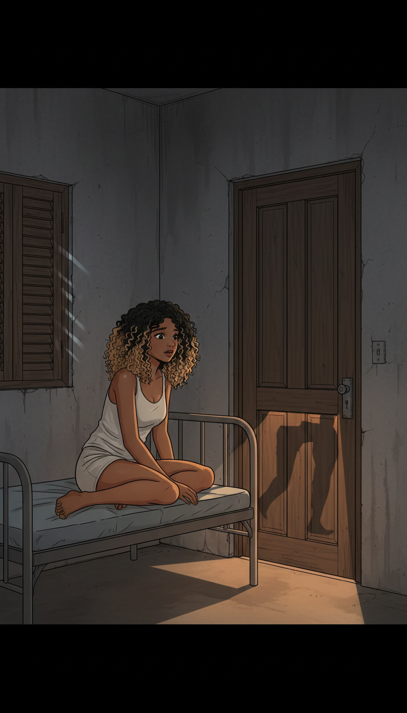
"Des voix d'hommes. Des rires. Puis des portes qui se ferment. Le son de l'argent qui change de main."
CLIC
murmures...
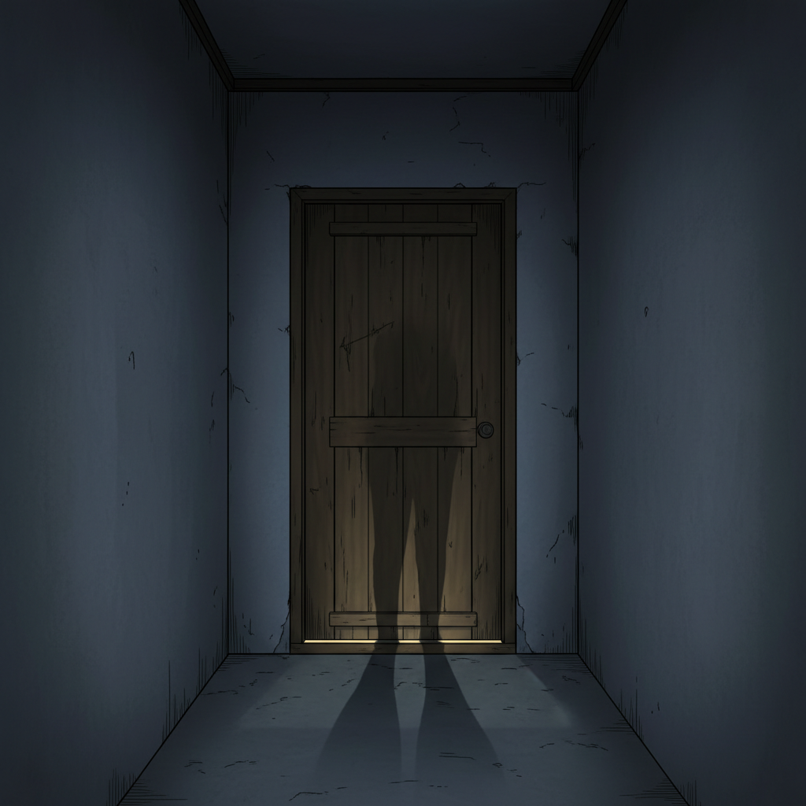
"J'ai fermé les yeux très fort. Mais on n'efface pas certains sons. Je venais de comprendre dans quel piège j'avais mis les pieds."
CLAC